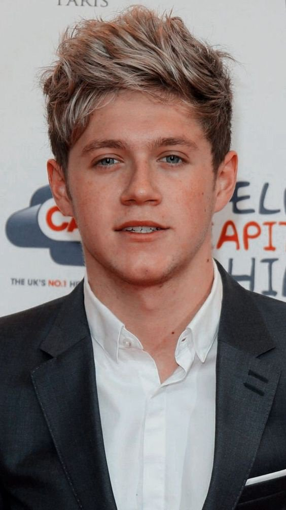

Harry Styles
was seen as the flirt of the group, and was the most popular with girls


was seen as the flirt of the group, and was the most popular with girls
Zayn was known as the shy, hot, bad boy type
Niall was the sweet, funny, (not saying the others aren’t, they are) boy who eats everything
Louis was the sassy, life of the party one
Liam was known as the, calm(er), mature one, aka Daddy Direction. I feel like Liam was the one who held the boys together
After years of reaching milestones and breaking records, the band started to slow down. In early 2015, it was announced on Facebook that Zayn Malik would be leaving the band. The four remaining members released a final album and announced an extended hiatus in August 2015.
One direction members and their individual best songs
| Members | Their best songs |
|---|---|
| Zayn Malik | Dusk Till Dawn |
| Harry styles | watermelon sugar |
| Louis Tomlinson | Bigger than me |
| Niall Horan | Our song |
| Liam Payne | sunshine | Suggestions are always welcome |